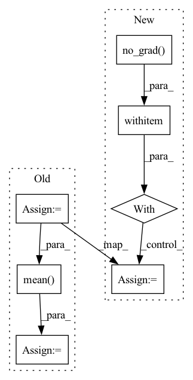

Pattern ID :17504
Before Change
state = problem.get_opt_state_for_param(param)
step = state.get("step", 0)
exp_avg_sq = state.get("exp_avg_sq", torch.zeros_like(vector))
beta2 = param_group["betas"][1]
eps = param_group["eps"]
denom = torch.add(
torch.sqrt(torch.mean( beta2 * exp_avg_sq) ), eps
) / math.sqrt(1 - beta2**step)
outputs.append(vector / denom)After Change
param_group = problem.get_opt_param_group_for_param(param)
state = problem.get_opt_state_for_param(param)
with torch.no_grad() :
beta1, beta2 = param_group["betas"]
eps = param_group["eps"]
last_grad = state.get("last_grad", torch.zeros_like(vector))
exp_avg = state.get("exp_avg", torch.zeros_like(vector))
exp_avg_sq = state.get("exp_avg_sq", torch.zeros_like(vector))
exp_avg_old = (exp_avg - (1 - beta1) * last_grad) / beta1
exp_avg_sq_old = (
exp_avg_sq - (1 - beta2) * last_grad * last_gradIn pattern: SUPERPATTERN
Frequency: 3
Non-data size: 7
Instances Fragment ID: 57992101
Project Name: leopard-ai/betty
Commit Name: 831b8d6a8444a2c09aae0a7d37bb280b7b52ca55
Time: 2023-04-06
Author: sangkeuc@andrew.cmu.edu
File Name: betty/hypergradient/utils.py
M Class Name: AnonimousClass
N Class Name: AnonimousClass
M Method Name: precondition(2)
N Method Name: precondition(2)
M Parent Class:
N Parent Class:
M File Name: betty/hypergradient/utils.py
N File Name: betty/hypergradient/utils.py
M Start Line: 22
M End Line: 34
N Start Line: 21
N End Line: 41
Before Change
def forward(self, images, input_ids = None):
batch = images.shape[0] // (N)
//with torch.no_grad():
batch_features = self.__cnn__(images) // (N, features_dim, block_num, block_num)
conv_features = self.__img2embed_conv__(batch_features).permute(0, 2, 3, 1) // (N, block_num, block_num, embed_dim * 0.5)
apool = torch.mean( conv_features, dim = 1) // (N, block_num, embed_dim * 0.5)
mpool, _ = torch.max(conv_features, dim = 1) // (N, block_num, embed_dim * 0.5)
imgs_embed = torch.cat([apool, mpool], dim = 2) // (N, block_num, embed_dim)
words_embed = self.__content_embed__(input_ids) // (N, seq_len, embed_dim)
indices = torch.arange(self.seq_len + self.block_num).expand(batch, -1).to(device)After Change
batch = images.shape[0] // (N)
with torch.no_grad() :
batch_features = self.__clip__.encode_image(images)
//text_input = self.__get_text_input__(tag_ids)
//batch_texts = self.__clip__.encode_text(text_input) Fragment ID: 57992109
Project Name: siwooyong/codalab-microsoft-coco-image-captioning-challenge
Commit Name: d24b22ec9f0be1acd2f307be20ec85f84f8d8795
Time: 2021-07-08
Author: 68500343+yongsiwoo@users.noreply.github.com
File Name: models/base_model.py
M Class Name: decoder
N Class Name: decoder
M Method Name: forward(4)
N Method Name: forward(3)
M Parent Class: nn.Module
N Parent Class: nn.Module
M File Name: models/base_model.py
N File Name: models/base_model.py
M Start Line: 57
M End Line: 74
N Start Line: 75
N End Line: 97
Before Change
train_batches = []
for j in range(0, len(train_smiles), self.args.batch_size):
train_batches.append(train_smiles[j:j + self.args.batch_size])
batch_encs = [self.encoder(train_batch) for train_batch in train_batches]
means = [torch.mean( batch_encs[i], dim=0, keepdim=True) for i in range(len(batch_encs))]
domain_encs.append(torch.mean(torch.cat(means, dim=0), dim=0))
self.domain_encs = domain_encs
After Change
if self.args.cuda:
means_sum = means_sum.cuda()
for train_batch in train_batches:
with torch.no_grad() :
batch_encs = self.encoder(train_batch) //bs x hidden
means_sum += torch.mean(batch_encs, dim=0)
domain_encs.append(means_sum / len(train_batches))
self.domain_encs = domain_encs Fragment ID: 57992105
Project Name: aamini/chemprop
Commit Name: ce09638e4df7666a5cbdc5297eda15364cb46add
Time: 2018-10-28
Author: yangk@mit.edu
File Name: moe.py
M Class Name: MOE
N Class Name: MOE
M Method Name: compute_domain_encs(2)
N Method Name: compute_domain_encs(2)
M Parent Class: nn.Module
N Parent Class: nn.Module
M File Name: moe.py
N File Name: moe.py
M Start Line: 164
M End Line: 169
N Start Line: 164
N End Line: 174